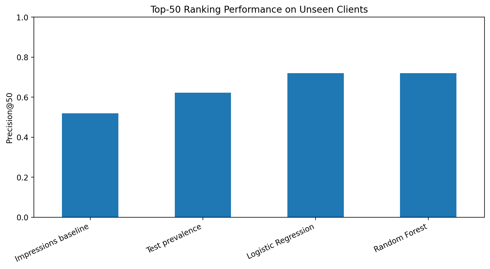
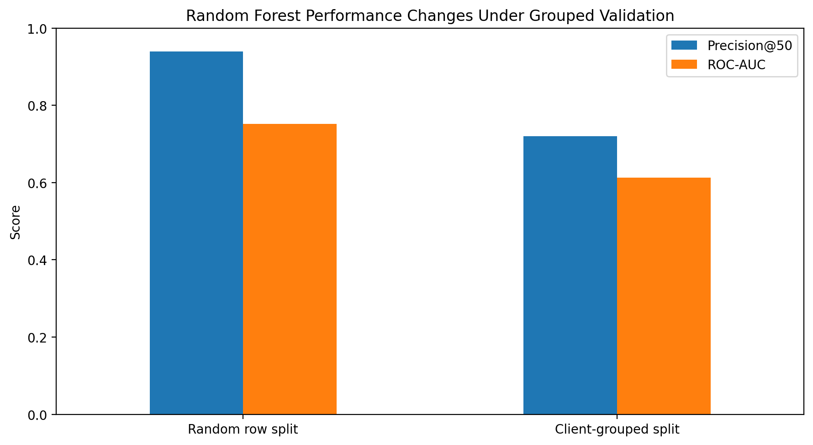
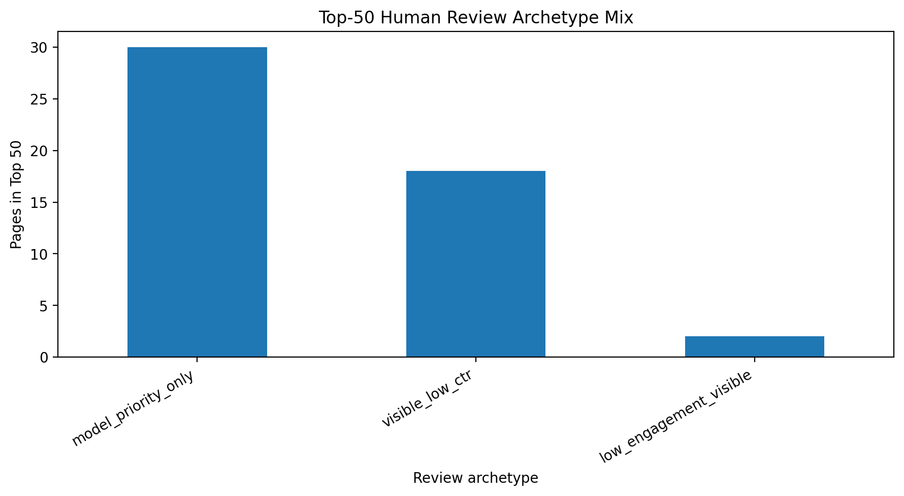

What this study asks and what it found
The problem is limited review capacity
A content or SEO reviewer cannot inspect every page every week. The operational question is therefore not simply whether a page appears to be declining, but which pages should be investigated first.
A false positive consumes one of the available review slots. A false negative can leave a page exhibiting the decline proxy outside the current review queue. That makes the useful output an ordered queue rather than only a binary prediction.
Production-scale context, smaller modelling snapshot
Release v20260703 contains approximately 78.8 million daily content-performance rows. The verified March 2026 partition contained 9,841,378 rows.
The anonymised starter dataset contains 30,000 rows × 44 columns. Complete-case filtering retained 19,897 rows.
The warehouse was queried directly from month-partitioned Parquet with DuckDB. Its role in this project was production-scale schema verification, data-contract work and exploration.
The final Logistic Regression and Random Forest models in this paper were trained on the smaller 30,000-row anonymised starter snapshot—not on the entire warehouse.
Ranking first, validation before claims
Ranking/scoring with Precision@50 as the primary operational metric.
trend_direction == "down", explicitly
treated as a rule-derived contemporaneous proxy.
Rank all test pages by
impressions_90d
alone.
70/30 GroupShuffleSplit by client: 20 training clients, 9 unseen test clients, zero overlap.
Model features
Leakage audit
The target, its source field, identifiers and existing product-decision outputs were excluded from model features.
As a deliberate test of the validation harness, adding the target-source signal back into the Random Forest pushed ROC-AUC to 1.000. That result is treated as a leakage diagnostic—not model performance.
The learned models improve the top of the review queue
| Method | Precision@50 | ROC-AUC |
|---|---|---|
| Impressions-only baseline | 0.520 | — |
| Test-set decline prevalence | 0.623 | — |
| Logistic Regression | 0.720 | 0.586 |
| Random Forest | 0.720 | 0.612 |

Figure 1. Top-50 ranking performance on the client-grouped holdout. Values are measured on the same unseen-client test population.
Why validation design matters
Under a row-random split, the Random Forest measured Precision@50 = 0.940 and ROC-AUC = 0.752. The random test set shared 28 clients with training.
Under the client-grouped split, client overlap was zero and performance measured Precision@50 = 0.720 and ROC-AUC = 0.612.

Figure 2. Random-row validation produced a more optimistic estimate than client-grouped validation. The paper therefore uses the grouped result when discussing unseen-client generalisation.
What the evidence does not establish
The target is not a future outcome
The target is a rule-derived proxy describing recent observed decline. It is not a strictly future outcome measured after a prediction date.
Feature and outcome windows overlap
Several trailing-90-day features overlap the broad period used to construct the decline proxy. Client grouping removes entity overlap but does not create prospective temporal separation.
Complete-case selection matters
Complete-case filtering retained 19,897 of 30,000 starter rows. The evaluated population therefore differs from the full snapshot.
Nine clients are held out
The grouped split is more defensible than a row-random split for this question, but nine held-out clients do not demonstrate universal performance across every future site or content type.
No causal refresh claim
This observational study does not establish that refreshing or rewriting a recommended page will cause traffic, rankings or engagement to improve.
Use the score to decide what to review—not what to publish
The validated model score determines which pages enter the review queue first. Reason codes are then attached to explain what a reviewer should investigate.
| Review archetype | Human action |
|---|---|
| Visible, low CTR | Review title, snippet and search-intent fit. |
| Low engagement, visible | Review content alignment, usefulness and depth. |
| Thin, visible | Review whether important topic coverage is missing. |
| Stale, visible context | Check changed facts, SERP conditions and competitors. |
| Model priority only | Diagnose manually before deciding whether to edit. |

Figure 3. Distribution of human-review archetypes within the Top-50 queue. Reason codes explain what to inspect; they are not automatic edit instructions.
The analysis can be inspected from framing to deployment
Notebooks, validation logic, metrics receipts and paper assets are versioned in the repository.
Data credit
Built on the FlyRank ML Internship dataset . Data and programme context provided by FlyRank.